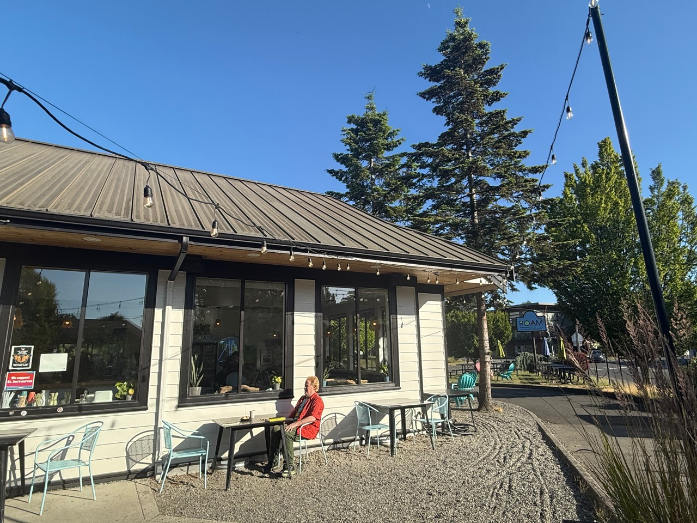

Steve's Study Flashcards
Three self-contained study decks from Steve's final exam prep email.
Combined Meaning Graph
All terms connected in a rotating traversable graph
Fused Mind Map
All three decks grouped by semantic memory patterns
Environmental Ethics Exam
Adaptive 25-question rounds and a 100-question final
Marriage and Family Exam
Adaptive 25-question rounds and a 100-question final
Public Speaking Exam
Adaptive 25-question rounds and a 100-question final
Environmental Ethics
ETH-2100 flashcards
Marriage and the Family
SOC-2100 flashcards
Public Speaking
COM-2090 flashcards
